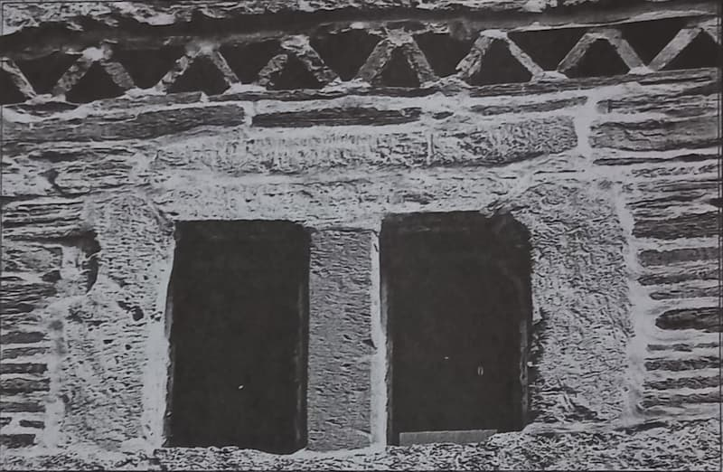
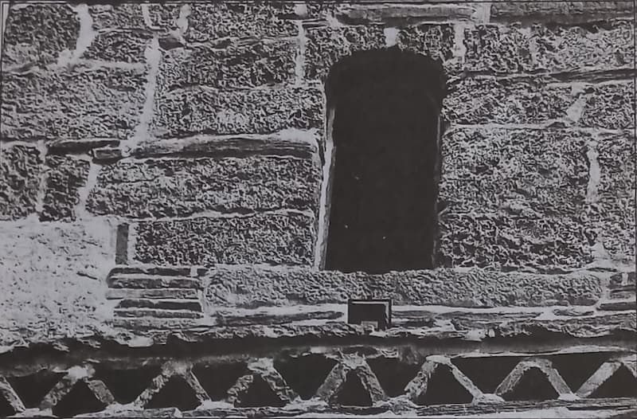

Concluziile la care am ajuns în prelegerea trecută, oricât de surprinzătoare ar fi părut ele față de concepția actuală a religiei și față de rolul care se asignează acestei activități spirituale în societatea de astăzi, nu sunt așa de revoluționare cum ar părea la prima înfățișare. Noi am încercat să fundăm concluziile acestea în două ordine deosebite. Vă aduceți aminte din prelegerile anterioare că prima fundare a constat în analiza actului religios, ajungând la concluzia că sunt necesari doi termeni în orice act religios, din care unul, obiectul asupra căruia țintește actul religios, și celălalt, subiectul, adică elementul de la care pleacă actul religios, sau punctul de plecare al actului religios. În al doilea rând, noi am fundat afirmația noastră trecută pe a doua analiză, de ordin nu atât sistematic, cât mai mult dogmatic-istoric, arătând anume că nu se poate presupune ca momentul subiectiv să fie o colectivitate. Afirmând caracterul individual al elementului subiectiv, reducem prin urmare presupoziția, care poată să conducă la o concepție socială a actului religios, și reducem, prin urmare, și concepția aceasta a actului religios.
Cum vă spuneam, concluzia ar fi putut să pară cam radicală, dar nu putea decât să corespundă unei anumite situațiuni istorice. Dacă vă amintiți începutul istoriei creștinismului – și mă raportez la creștinism pentru că este una dintre religiile care sunt obiective, adică al căror proces de desfășurare și obiectivare este mai complet -, atunci vă puteți aminti că în adevăr în desfășurarea creștinismului au zăcut cele mai multe dintre motivele de disoluție ale societății din acea vreme. Evident că, știind punctul meu de vedere, d-voastră nu o să spuneți că acest creștinism este cauza disoluției lumii antice, dar o să vă închipuiți că creștinismul și disoluția lumii antice sunt două fenomene concomitente; adică, fără să stea într-un raport de cauzalitate, nu e mai puțin adevărat că nici creștinismul și nici disoluția lumii antice nu țintesc înspre același proces care s-a întâmplat sub ochii istoriei, și anume, procesul de dezagregare socială provocat de lipsa de interes social în orientarea omenirii. Va să zică, vedeți că, în adevăr, religia conține acest element social. O să ziceți că în alte împrejurări religia n-a fost un element social, ci dimpotrivă, ea joacă un rol tocmai de unificare socială. Eu o să vă răspund că d-voastră confundați elementele cultice dintr-o religie oarecare cu însuși actul religios, adică trăirea divinității și atunci, dacă nu mai aveți nimic de obiectat, ne-am înțeles.
Sunt însă alte elemente de esența religiei care militează pentru același punct de vedere pe care vi l-am spus rândul trecut. În adevăr, religia însemnează, înainte de orice orientare spirituală, potențare a vieții spirituale pentru ea însăși; în sensul acesta, religia mai însemnează întoarcerea de la lumea reală și de la realitatea sensibilă și transportarea centrului de gravitație al interesului vieții noastre dincolo de limitele acestei realități. Aceasta este explicabil, între altele, mitul acesta al vieții viitoare, problema vieții nu este propriu-zis o problemă de metafizică, ci pur și simplu una religioasă. Este adevărat că originile acestei probleme sunt mai mult de natură morală. Pentru prima oară există pe lume oameni de bine și oameni răi, există un Dumnezeu Care stă deasupra celor buni și răi și Care-i judecă; și totuși, oamenii buni trăiesc rău și oamenii răi trăiesc bine. În fața faptului acesta inexplicabil, mintea omenească a zis: există totuși o posibilitate de răsplătire, care este viața viitoare. Dar dacă d-voastră ați cunoscut cât de cât spiritul religiei iudaice, v-ați dat seama că problema nemurirei sufletului este absolut străină acestui spirit și că problema aceasta, a vieții viitoare, nu poate să aibă, în Vechiul Testament și în iudaism, înțelesul pe care i-l dăm noi astăzi, creștinii; înțelesul aproape material pe care-l dăm noi astăzi când zicem că există vămi ale văzduhului pe care trebuie să le trecem, banii pe care îi punem în mâna mortului ca să plătească vămile, sunt atâtea prăpăstii și poduri care trebuiesc trecute. Vasăzică, nu exista pentru lumea iudaică problema aceasta, aproape materială, a unei existențe viitoare și atunci evident că problema „Iov” este mai mult o problemă alegorică decât una pusă în termeni direcți, în termeni reali. Morala a fost la început punctul de vedere care a prezidat la rezolvarea acestei probleme, dar el a încetat să fie moral de la o vreme. Şi pentru prima oară, dacă mi-aduc bine aminte, Scoruș înțelege să dea o interpretare în adevăr religioasă problemei acesteia, și anume, din afirmația foarte simplă că este pe pământ rai și iad. Afirmația lui Scoruș are o altă semnificare, și anume: există o viață după necesitățile trupului și există o viață după necesitățile spiritului; există o problemă a mântuirii, dar problema aceasta a mântuirii nu se poate rezolva decât în cadrul unei vieți după necesitățile spiritului. Deci, mântuirea se poate atinge aci pe pământ, numai că această mântuire este propriu-zis trăirea după necesitățile spiritului. Evident, deosebirea aceasta: spirit și corp, viață spirituală și viață după necesitățile trupului, viață păcătoasă după necesitățile trupului, viață virtuoasă după necesitățile spiritului, ideea aceasta este o idee la origine greacă, căci grecii au considerat cei dintâi materia ca element de corupțiune. Această idee greacă trăiește însă viu în spiritul european și se cristalizează în Scoruș, care zice: aci este raiul și iadul – în înțelesul că există o posibilitate de mântuire care nu se poate realiza decât pe calea necesității spirituale. Deci, a trăi după spirit înseamnă a te mântui, înseamnă a te sustrage de la rău. Căci mântuire ce însemnează decât tocmai ce urmărește și religia; și, cu alte instrumente, cu alte metode, pe alte căi, și filosofia – adică un fel de echilibrare spirituală a ta însuți.

Dacă în adevăr religia însemnează o potențare a vieții spirituale, o mântuire deci în accesoriu a acestei vieți spirituale, atunci este evident că latura socială a acestei probleme cade pe planul al doilea. Atunci evident că așa-numitul Ierusalim Terestru, care există în toată teologia Veacului de Mijloc, nu poate să fie numita Civitas Dei a lui Augustin, care nu era decât un fel de așezare strict morală, a sancțiunii religioase. Civitas Dei, problema pe care o pune și o rezolvă Augustin, nu este aceasta. Căci aceasta este propriuzis Cetatea lui Dumnezeu, a lui Augustin la sfârșitul căderii lumei atice – atât și nimic mai mult. Vasăzică, problema de morală, nu de religie, cum au spus unii învățați, chiar la noi în țară, aceasta este problema care se pune aci. Prin urmare, Civitas Dei nu rezolvă problema de religie. Formula aceasta, pe care a îmbrăcat-o mai târziu catolicismul și pe care a căutat să o generalizeze până la a reduce întreaga viață religioasă la organizarea bisericească, organismul omenesc pe bază religioasă, formula aceasta nu poate să convină adevăratei religiozități, care rămâne în adevăr mântuirea în cadrul preocupărilor spirituale. Aceasta înseamnă întoarcere de la realitate, întoarcere de la lumea reală, die grosse Umkehrung, cum a zis un german, pe care o reprezintă creștinismul în esență: trăirea după spirit. Veți obiecta, desigur, că nu toate religiile au ca principală preocupare această trăire după necesitățile spiritului. Nu voi nega lucrul acesta care, aproximativ, este adevărat, între cărțile de bază ale religiei creștine, știți că intră și Noul Testament și Vechiul Testament. Numai că, interpretarea pe care o dăm noi Vechiului Testament este o interpretare a noastră, creștină, a mentalității de aproape 1700 de ani. În Biblie, în Vechiul Testament, în cartea Genezei, Dumnezeu este numit Elohim. Propriu-zis, Elohim nici nu este Dumnezeu, sau este, dacă voiți, mai degrabă un Dumnezeu special. D-voastră știți că iudaismul sau mozaismul este monoteist prin excelență. Totuși Elohim nu este Dumnezeul pe care-l credem noi, pentru simplul motiv că filologicește, gramatical, nu este singular. Singularul este Eloah, iar Elohim este o formă specială ce nu se găsește în limba noastră, și anume un număr special care nu este nici unul, nici singular, nici plural, ci este numărul parital, perechea. Eloah este singularul. Prin urmare, Elohim însemnează propriu-zis, în ebraică, putere, nu spirit. Noi zicem spirit sau Dumnezeu, și cel ce se închină lui se închină cu trupul și cu adevărul, pe când în Biblie, Eloah însemnează cea din urmă putere, iar Elohim, această colectivitate compusă din două individualități, înseamnă puterea puterilor. Acest număr parital nu însemnează decât un fel de întărire, de superlativizare a singularului; vasăzică, un fel de putere a puterilor – aceasta însemnează Dumnezeu acolo. Pe urmă, mai departe, se vorbește iarăși de un fel tot la Geneză: „Şi spiritul lui Dumnezeu plutea deasupra apelor”. Textul ebraic zice; Va ruah Elohim. Aceasta însă nu însemnează tot spirit, însemnează tot putere. Prin urmare, principiul fundamental în iudaism nu este spiritul, ci este puterea creatoare, care este cu totul altceva decât spirit. Este adevărat că procesul de creațiune constă în simpla vorbire: a zis Dumnezeu să se facă lumea și lumea se făcu. Prin urmare, numai simpla zicere este suficientă ca să creeze momentul, ca să fundeze momentul creațiunii. În teologia greacă a începuturilor creștinismului – și o să vorbim despre acest lucru mai târziu, când vom vorbi despre Dumnezeu – momentul creațiunii era înfățișat altfel, și anume prin gândire. Nu există, pentru greci, nici o deosebire între a gândi și a crea. Dumnezeu creează în momentul în care și gândește. Iată o doctrină strict spiritualistă. Pentru iudaism, însă, despre procesul de gândire nu se spune nimic. Dumnezeu zice să se facă; prin urmare, actul de voință este propriu-zis ceea ce se accentuează între toate caracterele divinității în iudaism. Momentul volițional este acela care se accentuează. Prin urmare, forța dintr-o dată și, în al doilea rând, expunerea, exprimarea unui act de voință – Să se facă cutare lucru! Ceea ce este, în cadrul divinității, suficient pentru ca în adevăr să provoace creațiunea. Ei bine, Dumnezeu acesta, care a vrut, dă cu totul alt aspect realității decât aspectul pe care-l dă realității Dumnezeul spiritual al creștinismului de mai târziu, trecut prin toată metafizica greacă. Dar, pe de altă parte, momentul acesta volițional este hotărâtor pentru întreaga coloratură a desfășurării vieții. Despre cestiunea dacă este cauzalitate sau nu este cauzalitate, concomitentă sau paralelism – Dumnezeu sau determinările acestea ale divinității sunt determinări secundare, sunt așa-numite determinări secundare -, o să vorbim despre ele mai târziu, când vom vedea că aceste determinări secundare sunt întotdeauna în funcție de etosul, de structura spirituală a unui popor, prin urmare fac parte din determinările secundare ale divinității. Şi, evident, iudaismul și-a înfățișat un Dumnezeu, după structura spirituală a iudaismului însuși. Şi acest Dumnezeu, care în primul moment este forță și în al doilea [moment] voință, acest Dumnezeu era fatal să dea o religie mai mult îndreptată spre viața socială. Dar totdeauna asemenea acte de religie sau asemenea acte religioase riscă să se transforme pur și simplu într-o disciplină legiferatoare si de aceea propriu-zis religia ebraică se suprapune cu legea ebraică; iar când viața religioasă a iudaismului a depășit cadrul acesta, aș zice aproximativ moral și juridic, atunci s-a ivit, alături de religia oficială, o altă religie iudaică, adică aceea care este Cabala.
Vasăzică, vedeți verificată prin negațiune afirmația mea de adineauri: nu există viață religioasă decât în cadrul vieții spirituale; si, în momentul în care o religie n-are structura aceasta spirituală, ea decade și se transformă într-un codice de legi; și, dacă viața religioasă este într-adevăr puternică în acel popor, poporul își creează, alături de religia oficială, o altă religie, care este adevărata religie și care trăiește iarăși în forme spirituale specifice. Vasăzică, suprapunerea vieții religioase cu viața spirituală presupune o întoarcere de la necesitatea vieții practice din mijlocul realității sensibile și o raportare a individului asupra unui punct dincolo de marginile acestei realități sensibile, în sensul acesta se evidențiază că preocupările sociale, preocupările conviețuirii trec pe un al doilea plan. Așa se explică faptul că în toate religiile, dar absolut în toate, idealul de viață religioasă a fost întotdeauna ascetismul; nu călugăria, întrucât călugăria în domeniul bisericei catolice–nu este propriu-zis un ascetism, o potențare a vieții spirituale, o singularizare pentru facerea mai frecventă a contactului cu divinitatea; ci congregațiunea, confraternitatea din sânul unei mănăstiri reprezintă, în cadrul religiunii catolice, urmărește aducerea aminte a lui Civitas Dei a lui Augustin, model de viața socială pentru toți cei dimprejur. De aceea mănăstirile din Apus, de cele mai multe ori sunt în mijlocul orașelor, în mijlocul așezărilor omenești. Tocmai pentru ca viața aceasta să servească de exemplu celorlalți creștini, în Răsărit însă lucrul se întâmplă altfel: mănăstirile sunt în adevăr locașuri de reculegere, oamenii se retrag în afară de oraș și duc o viață cu un ritual, un program după care viața se scurge, dar programul acesta nu este făcut în vederea înlesnirii vieții în mănăstiri, ci programul acesta reprezintă pentru noi, răsăritenii, o disciplină spirituală care înlesnește legătura cu Dumnezeu, în Ţara Românească continuarea logică a vieții monahale este sihăstria, trăirea unuia singur în față numai cu preocupările lui religioase și, mai departe, în față numai cu divinitatea. Vasăzică, vedeți în ce se fundează, în afară de fundarea sistematică, fundarea dogmaticistorică, vedeți încă în ce se fundează caracterul asocia! al religiei, al actului religios în genere.

Cu considerațiile acestea, suntem oarecum la sfârșitul problemei celei de-a doua pe care am pus-o, și anume: considerațiuni generale asupra expresiunii actului religios, doar că impresiunea mea este că am intervenit ordinea normală a problemelor, pentru că expresiunea aceasta a actului religios nu este posibilă decât în momentul când între actul religios și expresiunea însăși se interpune convingerea religioasă, adică actul religios dă, ca un fel de precipitat, o convingere, care convingere trece de se exprimă pe urmă în formele pe care vi le-am expus, adică în morala religioasă, în cult, despre care am vorbit rândul trecut. Problema convingerii religioase este poate cea mai dificilă dintre toate problemele din filosofia religiei, nu numai din punctul de vedere al cercetărilor asupra, dar și prin faptul că cercetările asupra acestui fenomen sunt foarte reduse. Este adevărat, eu personal nu prea cunosc în legătură cu problema convingerii religioase decât foarte puțină literatură: Ritschl, Hegel, Schleiermacher. Problema însă e dificilă și din alte motive; pentru că, nu este vorba numai de a stabili ce însemnează convingere religioasă, în ce constă convingerea religioasă, ci și de a analiza această problemă în funcție de alta, cu mult mai complicată, si care azi scapă complet cercetărilor filosofice, și anume, de a lămuri problema în funcție de problema cunoașterii religioase.
Este o veche părere a mea, pe care n-am ajuns încă să o fundez teoretic în amănunte; nu că, anume, cea mai de seamă problemă a filosofici este în adevăr problema cunoașterii -cum spune toată lumea -, dar că, în cadrul problemei cunoașterii, iarăși cea mai de seamă problemă este stabilirea gradelor de cunoaștere. Nu este un singur fel de cunoaștere, ci sunt mai multe, după cum mai multe sunt și necesitățile din cari noi cunoaștem. Există anume grade, trepte de cunoaștere, care ne duc de la cunoașterea imediată a sensibilului până la cunoașterea absolută. Ei bine, problema aceasta este necunoscută în filosofie. Mați auzit adeseori făcând deosebiri superficiale între știință și filosofic, între felul științific de cunoaștere și felul filosofic de cunoaștere. Dar elementul care, pentru mine, se evidențiază în chip absolut, indeniabil pentru mine față de deosebirea științifică și cea filosofică, este încă mai accentuat atunci când avem în vedere cunoașterea propriu-zis religioasă. Ei bine, problema aceasta nu o s-o desfășor în toată plenitudinea în fața d-voastră, între altele pentru motivul că – pentru a fi sincer – eu însumi nu stăpânesc această problemă. Dar oarecari indicațiuni o să vă dau, pentru ca să vedeți în ce direcție se poate mișca, sau care ar fi calea de urmat pentru rezolvarea acestei probleme care este, în adevăr, problema crucială în preocuparea noastră filosofică, atunci când în adevăr filosofic, pentru noi, înseamnă împăcare cu sine însuși. S-a spus uneori că știința și filozofia ar fi un fel de cunoaștere analitică, un fel de cunoaștere în bucăți a realității și că religia este tocmai activitatea unificatoare pe care spiritul omenesc o exercită asupra întregii existențe. Aceasta a spus-o Schleiermacher. Nu pot să primesc definițiunea aceasta. Este adevărat că știința propriu-zisă are o activitate de cunoaștere în felii; este așa de adevărat lucrul acesta, încât mi se pare absurd să se vorbească de știință. Nu există o știință, există mai multe științe. Iar în cadrul științelor, nu există o singură matematică, ci mai multe matematici. Se poate vorbi de știință propriu-zisă, adică de știință ca un colectiv, nu ca material propriu-zis de cunoaștere, ci ca metodă generală și ca rezultate obținute, ca limite pe care acest instrument de cunoaștere le impune spiritului nostru, în sensul acesta de existență a științei, adică de existență a unei anumite metode de cunoaștere, care corespunde unor anumite necesități ale noastre și care împinge această cunoaștere până la anumite limite, suficiente pentru necesitatea din care purcede această cunoaștere, în înțelesul acesta, este o știință, altfel însă, nu. Altfel, există științe, adică aspecte izolate ale realității. Pentru că, după cum am mai avut ocaziunea să v-o spun, științele propriu-zise nu se definesc prin obiectul lor, ci prin metodă, și nu atât nici prin aceasta, cât prin orientare, prin unghiul sub care noi privim obiectele, adică realitatea sensibilă din jurul nostru, în sensul acesta, așadar, științele ne dau în adevăr o cunoștință dezintegrată a realității, ne dau aspecte succesive ale acestei realități, după unghiul de vedere în care ne așezăm. Şi până aci, definițiunea lui Schleiermacher se poate primi. Dar vine filosofia. Filosofia aceasta nu mai este propriuzis același lucru, ea nu mai constă din anumite compartimente, din anumite sertare ale spiritului nostru; filosofia aceasta nu mai este acea cercetare din anumite unghiuri de vedere; dar, evident, sunt și aceste unghiuri, ce ne dau diferite discipline filosofice, ce ne dau nouă morala, metafizica, teoria cunoștinței, care ne dau o psihologie ce iese din cadrul filosofici propriu-zise. Dar toate aceste unghiuri, toate aceste puncte de vedere, nu-și au scopul în ele însele; ci ele nu sunt, la rândul lor, decât tocmai instrumente pentru vederea de ansamblu la care trebuie să ajungem prin filosofic, instrument care stă într-o anumită legătură, misterioasă uneori, pentru că adaptarea unui punct de vedere într-unul din aceste compartimente ale filosofici aduce după sine o întreagă corelațiune de puncte de vedere în celelalte compartimente. Dar însăși această legătură misterioasă este o indicațiune că ultimul țel sau, mai bine zis, ultimul resort al activității filosofice este tocmai această activitate unificatoare a spiritului nostru, necesitatea spiritului nostru de a-și crea o vedere de ansamblu asupra întregii realități.
Vasăzică, considerată filosofia așa cum o înfățișez acum – care este, după cum ați auzit de atâtea ori, un punct de vedere foarte acceptabil în genere -, considerată astfel filosofia, deosebirea care se face între conștiința științifică și conștiința religioasă, pe tema secționării și a integrării universului, nu mai subzistă, căci în cazul acesta filosofia ar intra în cadrul religiei, ceea ce nu ar fi exact. Şi atunci, s-a încercat o altă definițiune și s- a spus: da, însă, în plus, religia se ocupă cu problema dumnezeirei. Nici această determinare nu este suficientă, pentru motivul că problema divinității apare, sub o formă sau alta, și în filosofic. Nu există sistem filosofic complet încheiat care să nu ajungă, mai curând sau mai târziu, la un punct limită, care este Dumnezeu – fie că acest Dumnezeu este materie, fie că este universul, ca la panteiști, fie că este o Idee supremă de bine, ca la platonicieni etc.; dar toate ajung la un punct limită, izvor al întregii vieți și al întregii realități, și, în același timp, fundare a întregii realități. Deosebiri evident că trebuie să existe între filosofic și religie, dar deosebirile acestea nu vin de la obiect, ci probabil că vin din altă parte: întâi, de la rolul pe care obiectul îl joacă în preocuparea filosofică sau în cea religioasă; și, în al doilea rând, de la felul cum se ajunge la acest obiect, pe o cale sau pe cealaltă. Căci d-voastră ați văzut că, pe calea religioasă, ajungerea la Dumnezeu se face prin identificare (despre lucrurile acestea, am mai vorbit în treacăt), iar dovedirea existenței lui Dumnezeu se face pe calea trăirei; pe câtă vreme în filosofic, punctul acesta limită, Dumnezeu, este rezultatul unui întreg șir de cercetări ale rațiunii noastre – și în metafizică în special.
Vasăzică, există o deosebire între filosofic și religie, dar deosebirea aceasta provine din instrumentul sau din căile pe cari ajungem la obiect într-o parte sau în cealaltă. Evident că drumurile acestea nu sunt așa de lungi, unul ca și celălalt, adică nu duc ambele tot așa de departe; căci dacă același ar fi rezultatul cercetării filosofice și rezultatul cercetării religioase, natura aceasta, care este atât de armonică, nu ar fi creat dublete. Şi, în fapt, nici nu se ajunge la același rezultat, pentru că ultimul punct la care ajunge filosofia este în adevăr un punct limită, în înțelesul matematic al cuvântului, adică un punct către care conștiința noastră tinde totdeauna, dar pe care nu-1 atinge niciodată. Nu există cunoaștere a lui Dumnezeu pe cale metafizică; există însă altceva: postularea ca necesitate a lui Dumnezeu pe cale metafizică. Pe câtă vreme în ordinea religioasă există o cunoaștere a divinității, și anume o cunoaștere imediată, cu alt instrument decât acela al rațiunii, o cunoaștere imediată, adică o trăire a acestei realități ultime. Vasăzică, vedeți cam care este calea pe care trebuie să urmărim problema aceasta a deosebitelor cunoașteri (științifică, filosofică și religioasă): nu o definiție a acestor cunoașteri în funcțiune de obiect – obiectul este același -, ci o determinare a acestor feluri de cunoaștere pe calea metodelor de lucru. Conștiința religioasă, după cum știți, este în legătură cu așa-numita credință. Despre credință propriu-zis n-am să vorbesc prea mult. Cine vrea să se intereseze de problema aceasta, poate să găsească, de la Hegel încoace, literatură suficientă, cu toate că Hegel consideră problema credinței în legătură cu problema cultului. Analiza pe care el o face este destul de satisfăcătoare. Subliniez însă legătura aceasta, dintre credință și cunoașterea religioasă, tocmai pentru ca să arăt caracterul emoțional, as zice, al cunoașterii acesteia religioase.
Emoțiunea este, fără îndoială, genetică și, logicește, primordială nouă, cunoștinței umane, pentru simplul motiv că ea este piatra de încercare, etalonul, măsura pentru individualitatea noastră, a eului nostru. Numai în momentul în care intervine emoțiunea, intervine o sesizare a eului omenesc. Vasăzică, personalitatea noastră este întotdeauna în funcție de emoțiune, în înțelesul că emoțiunea, după cum spuneam încă acum patru ani, când întâmplător făceam un curs de psihologie , este rezultatul unei raportări a mediului ambiant la realitatea noastră personală sau la realitatea personalității noastre psiho-fizice; adică, mai pe scurt, eu am impresiunea din lumea din afară. Această impresiune îmi este plăcută sau neplăcută. Ei bine, plăcerea sau neplăcerea este primul moment în determinarea personalității mele. Personalitatea mea propriu-zis nu se definește dinăuntru în afară, ci din afară înăuntru. Personalitatea mea este un întreg sistem de negațiuni: nu pot să sufăr cutare, n-am plăcerea cutare etc. Excluziunile acestea pe cari le fac de la mine încolo mă definesc pe mine negativ, din afară înăuntru, si numai după ce am înlăturat tot ceea ce nu-mi place, atunci încep să mă încheg eu propriu-zis ca personalitate, ca personalitate priho-fizică, pentru că sunt acum în domeniul propriu-zis al psihologiei. Vasăzică, în sensul acesta, în adevăr, emoțiunea este un element primordial în închegarea, în constituirea personalității umane, și faptul acesta este cu atât mai caracteristic pentru religie, care pentru noi este una dintre activitățile, iarăși, fundamentale ale spiritului uman. Prin urmare am stabilit că primul element în cunoașterea religioasă este de natură emoțională.
CE CITEȘTI ÎN AXA – POȚI DUCE CU TINE!